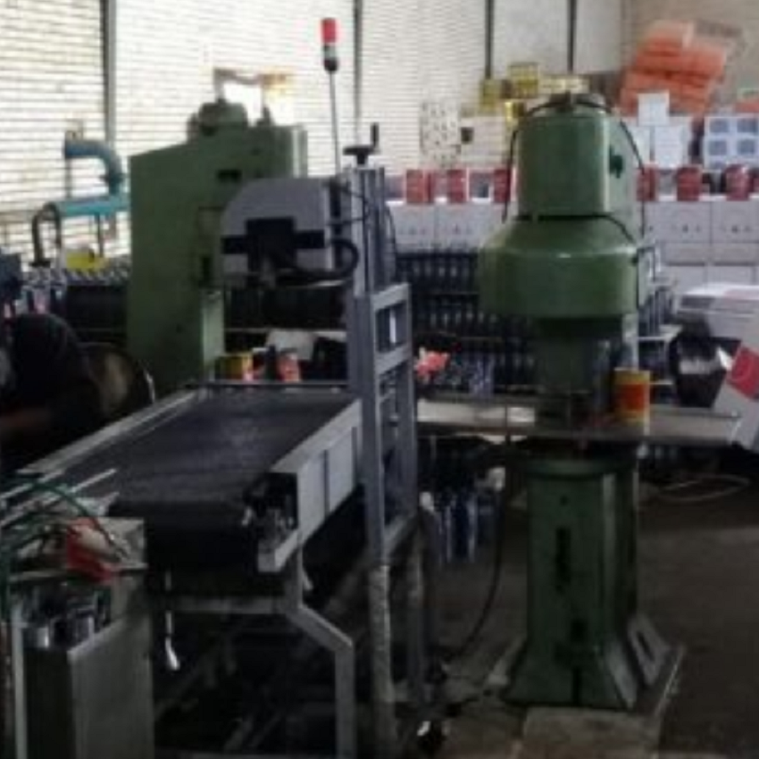

- info@baftbzanjan.com
- +98-912-4421511
- +98-243-2221537
- +98-243-2221535
مشتریان
نخ تایر صبا
شرکت سرمایه گذاری و توسعه صنایع لاستیک با ماموریت تولید منسوج استخوانبندی تایر از جنس نایلون ۶ و ۶،۶ برای کلیه تایرهای سواری و باری، بزرگترین تولید کننده این محصولات در منطقه بوده و تنها کارخانه ای است که چرخه کامل فرآیند تولید نخ تایر را دارا می باشد.
بیشتر بخوانیدمشتریان
شرکت گسترش صنایع روی ایرانیان
پشرکت گسترش صنایع روی ایرانیان “سهامی خاص” در سال ۱۳۸۴، به منظور تولید ۲۰۰۰ تن ورق روی در اداره ثبت شرکت ها و مالکیت صنعتی زنجان به ثبت رسید و در سال ۱۳۸۶ آغاز به کار نمود. این شرکت توانست طی مدت ۶ سال پروانه بهره برداری خود را ارتقا و مجوز تولید سالیانه ۶۰۰۰ تن شمش روی را کسب نماید. شمش روی بر اساس استانداردهای داخلی و در گریدهای Zn*2، Zn3*، SHG با خلوص بالاتر از ۹۹٫۹۸% روی در حال تولید میباشد و هیدروکسید روی با هدف جلوگیری از آلایندگی محیط زیست و هدر رفت سرمایه ملی تولید می شود.
بیشتر بدانیممشتریان
روغن موتور شتاب
شرکت پالايش روغن موتور شتاب از سال 1380 کار خود را در زمينه روغن موتور آغاز و تاکنون موفق به دريافت استانداردهاي متعددي از جمله API:SC/CC با ويژگي روغن موتور SC/CC و استاندارد روغن موتور با سطح کيفيت APISE/CC20 W50 با نام تجاري گراش – ونک و … شده است .
بیشتر بدانیم

مشتریان
شرکت صافی سازان صفا
اولین شکل امروزی فیلتر پرس در سال 1853 در انگلستان اختراع شد که برای بدست آوردن روغن دانه های روغنی با استفاده از اتاقک های تحت فشار (Chamber) به کار گرفته شد . اما معایب بسیار زیادی بهمراه داشت ، مانند نیاز به نیروی کار بسیار بالا و روند ناپیوسته کاری . تحقیقات و پیشرفت های عمده در فناوری فیلتر پرس از اواسط قرن بیستم آغاز شد. در ژاپن در سال 1958 ، کنیچیرو کوریتا و سیئیچی سووا موفق به تولید اولین فیلتر پرس اتوماتیک از نوع افقی در جهان برای بهبود کارایی نظیر تخلیه کیک و استخراج بهینه رطوبت شدند . 9 سال بعد ، شرکت Kurita شروع به ساخت دیافراگم های انعطاف پذیر برای کاهش رطوبت در کیک فیلتر کرد. این دستگاه امکان بهینه سازی چرخه فیلتراسیون اتوماتیک ، فشرده سازی کیک ، تخلیه کیک و شستشوی پارچه فیلتر را فراهم کرد که منجر به افزایش بهره وری و کاربردها در صنایع مختلف شد.
بیشتر بدانیم